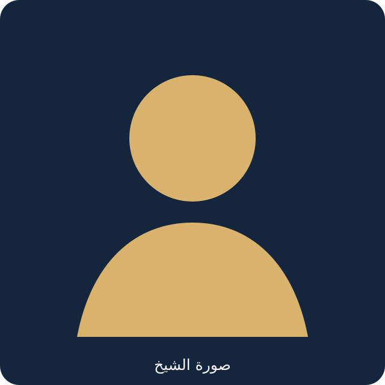

حول الشيخ محمد أحمد الهادي الكرار

السيرة الذاتية
البيانات الشخصية
الاسم: الشيخ محمد أحمد الهادي الكرار
تاريخ الميلاد: 27 فبراير 1983م
مكان الميلاد: قرية الجعليين - ريفي شمال بحري
المؤهلات والمسيرة العلمية
- بكالوريوس الشريعة الإسلامية، الجامعة الإسلامية بالمدينة المنورة، المملكة العربية السعودية (2003 - 2007م).
- تمهيدي الماجستير في الشريعة الإسلامية، جامعة إفريقيا العالمية (2010 - 2011م).
- شهادة حفظ القرآن الكريم كاملاً.
- المرحلة الثانوية (تحفيظ القرآن الكريم)، محافظة عفيف، المملكة العربية السعودية (1999 - 2001م).
- المرحلة المتوسطة (تحفيظ القرآن الكريم)، محافظة عفيف، المملكة العربية السعودية (1995 - 1998م).
- المرحلة الابتدائية (تحفيظ القرآن الكريم)، محافظة عفيف، المملكة العربية السعودية (1990 - 1995م).
الخبرات والنشاط التدريسي
- تدريس التفسير، وأصول التفسير، وأصول الفقه بمركز ابن عثيمين للدراسات الشرعية بالكدرو (لمدة 7 سنوات - مستمر حتى الآن).
- تدريس التفسير، وأصول التفسير، وأصول الفقه بمعهد الإمام البخاري للحديث وعلومه بالصحافة (لمدة 4 سنوات - مستمر حتى الآن).
التواصل والدعم
للتواصل المباشر أو لطلب المساعدة والدعم الفني الخاص بالموقع: